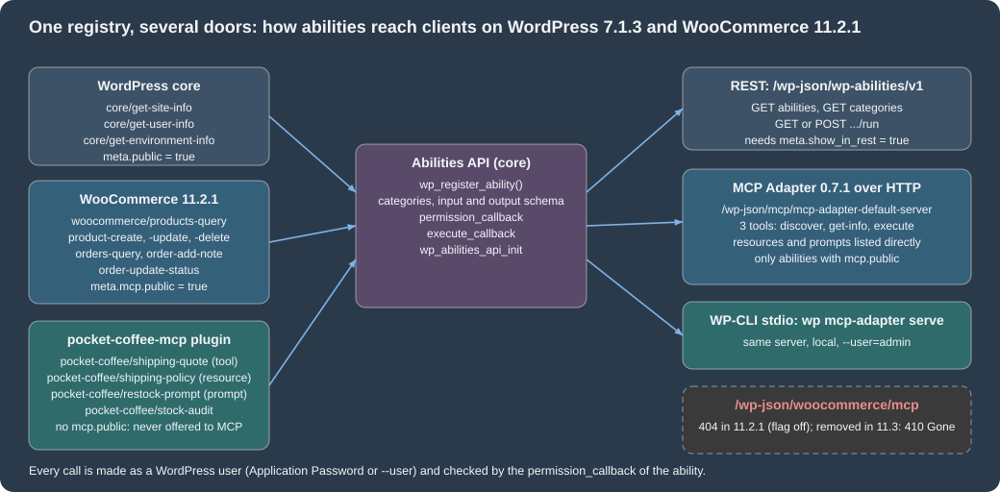
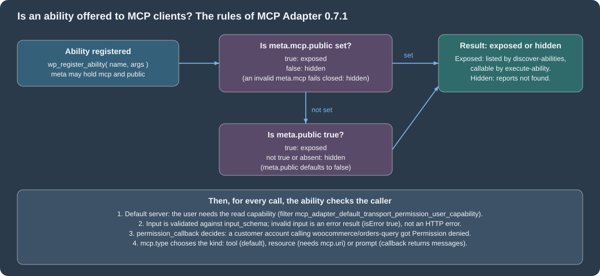

AI and MCP
|
This content was generated with the assistance of AI and should be verified against the official documentation before being relied on in production. |
This page was written against WordPress 7.1.3 and WooCommerce 11.2.1 (PHP 8.3.36, MariaDB 11.8), with the MCP Adapter plugin 0.7.1 (released 2026-10-16, requires WordPress 6.9 and PHP 7.4) and the Model Context Protocol revision 2025-06-18, and it was checked on 2026-10-27. The WooCommerce 11.3 changes (the removal of the old MCP endpoint, the extensible abilities and the Universal Commerce Protocol) were checked on a separate, throw-away site with WooCommerce 11.3.0-beta.1, the first beta of 11.3 (2026-10-26); 11.3 has no stable release yet, so everything attributed to it can still change. The whole feature set is a developer preview in the official documentation. It applies to every WooCommerce store on WordPress 6.9 or later, with no plan or edition restriction; hosting plans that do not allow installing plugins cannot use the adapter. The page follows the pages on the REST API and webhooks and on the Store API, which are the non-agent ways to reach the same data, and on performance and security, whose hardening advice applies to every endpoint opened here. For the protocol itself see the section on the Model Context Protocol, in particular the pages on architecture, primitives, authorization, security and testing and debugging.
The running example is Pocket Coffee. The plugin pocket-coffee-mcp registers the shop’s shipping quote (flat 4.90 EUR in Spain, free from 40 EUR, flat 9.90 EUR in the rest of the European Union, at most
5 kg per parcel) as an ability that is offered to agents as a tool, the shipping policy as an MCP resource, a restock email request as an MCP prompt and a stock audit that is deliberately kept away from
agents. An agent that works for the shop owner can then ask what Madrid and Berlin customers pay, read WooCommerce’s product catalogue and, with the right permissions, change an order. Everything marked as
run was run on the local store; what could not be run is listed in What was run and what was not.
How the pieces fit
Four layers are involved, and each is a separate package with its own version.
| Layer | What it is | Where it lives |
|---|---|---|
Abilities API |
A registry of named, typed capabilities: a name such as |
WordPress core. The functions in the 7.1.3 source are tagged |
WooCommerce abilities |
Purpose-built abilities for products and orders, registered in the |
The WooCommerce plugin ( |
MCP Adapter |
Turns abilities into MCP tools, resources and prompts and serves them over HTTP (a REST route) or over STDIO (a WP-CLI command). It owns sessions, protocol handling and the three generic tools of the default server. |
The plugin |
Authentication |
The caller is a WordPress user. Remote clients send an Application Password with HTTP Basic authentication; the local STDIO transport runs as the user given with |
WordPress core (Application Passwords). |
The figure shows the registrants on the left, the core registry in the middle and the doors on the right, with the numbers and routes seen on the local store.

Registering an ability
An ability is registered in two steps, both on hooks of the Abilities API, never at plugin load time: the category on wp_abilities_api_categories_init and the ability on wp_abilities_api_init. Registering
outside those hooks is rejected with a _doing_it_wrong notice, and registering an ability whose category does not exist fails. The arguments of wp_register_ability( $name, $args ) are these.
| Argument | Meaning |
|---|---|
|
|
|
Required. The description is what a model reads to decide when to call the ability, so say what it does and when to use it. |
|
Required. A category registered with |
|
Optional JSON Schema objects. Input is validated before the callbacks run and output is validated after; an invalid input is an error result, not an exception. Use |
|
Required. Receives the validated input and returns any value or a |
|
Required. Receives the same input and returns |
|
|
|
Since 7.1.0. Whether the ability is meant for clients such as REST, MCP or agents; it seeds the per-channel flags below. Default false. |
|
Whether the ability can be listed and run under |
|
Read by the MCP Adapter: |
|
Optional class that extends |
The functions around it are wp_unregister_ability(), wp_has_ability(), wp_get_ability(), wp_get_abilities() (with an $args filter since 7.1.0) and the category counterparts
wp_register_ability_category(), wp_unregister_ability_category(), wp_has_ability_category(), wp_get_ability_category() and wp_get_ability_categories(). A WP_Ability object offers check_permissions(),
execute(), validate_input() and getters. The hooks that a plugin can use to observe or change the flow are the filters wp_register_ability_args, wp_ability_normalize_input, wp_ability_validate_input,
wp_ability_permission_result, wp_pre_execute_ability, wp_ability_execute_result and wp_ability_validate_output, and the actions wp_ability_invoked, wp_before_execute_ability and wp_after_execute_ability.
The Pocket Coffee plugin
The first part of the plugin registers the category and the shipping quote. The ability exposes the quote as an MCP tool (meta.mcp.public true), asks for the WooCommerce capability manage_woocommerce and uses
WC()->countries->get_european_union_countries() for the zone, so the example has real WooCommerce behaviour behind it.
<?php
/**
* Plugin Name: Pocket Coffee MCP
* Description: Exposes the Pocket Coffee shipping quote as a WordPress ability and an MCP tool.
* Version: 0.1.0
* Requires at least: 7.0
* Requires PHP: 7.4
* Requires Plugins: woocommerce
* Author: Pocket Coffee
* License: GPL-2.0-or-later
* Text Domain: pocket-coffee-mcp
*
* @package PocketCoffeeMcp
*/
defined( 'ABSPATH' ) || exit;
/**
* Register the ability category.
*/
function pcmcp_register_category() {
if ( ! function_exists( 'wp_register_ability_category' ) ) {
return;
}
wp_register_ability_category(
'pocket-coffee',
array(
'label' => __( 'Pocket Coffee', 'pocket-coffee-mcp' ),
'description' => __( 'Abilities provided by the Pocket Coffee shop.', 'pocket-coffee-mcp' ),
)
);
}
add_action( 'wp_abilities_api_categories_init', 'pcmcp_register_category' );
/**
* Shipping quote: Spain 4.90 EUR (free from 40 EUR), rest of the EU 9.90 EUR, 5 kg per parcel.
*
* @param array $input Validated input: country, subtotal, weight_kg.
* @return array|WP_Error
*/
function pcmcp_shipping_quote( $input ) {
$country = strtoupper( $input['country'] );
$subtotal = (float) $input['subtotal'];
$weight = (float) $input['weight_kg'];
if ( $weight > 5.0 ) {
return new WP_Error( 'pcmcp_too_heavy', __( 'A parcel cannot exceed 5 kg.', 'pocket-coffee-mcp' ) );
}
if ( 'ES' === $country ) {
$rate = $subtotal >= 40.0 ? 0.0 : 4.90;
$zone = 'Spain';
} elseif ( in_array( $country, WC()->countries->get_european_union_countries(), true ) ) {
$rate = 9.90;
$zone = 'European Union';
} else {
return new WP_Error( 'pcmcp_no_zone', __( 'Pocket Coffee does not ship there.', 'pocket-coffee-mcp' ) );
}
return array(
'zone' => $zone,
'rate' => $rate,
'currency' => get_woocommerce_currency(),
);
}
/**
* Register the ability.
*/
function pcmcp_register_ability() {
if ( ! function_exists( 'wp_register_ability' ) ) {
return;
}
wp_register_ability(
'pocket-coffee/shipping-quote',
array(
'label' => __( 'Pocket Coffee shipping quote', 'pocket-coffee-mcp' ),
'description' => __( 'Returns the shipping zone and rate for a destination country, subtotal and parcel weight.', 'pocket-coffee-mcp' ),
'category' => 'pocket-coffee',
'input_schema' => array(
'type' => 'object',
'properties' => array(
'country' => array(
'type' => 'string',
'description' => 'ISO 3166-1 alpha-2 country code.',
'pattern' => '^[A-Za-z]{2}$',
),
'subtotal' => array(
'type' => 'number',
'minimum' => 0,
),
'weight_kg' => array(
'type' => 'number',
'minimum' => 0,
),
),
'required' => array( 'country', 'subtotal', 'weight_kg' ),
'additionalProperties' => false,
),
'output_schema' => array(
'type' => 'object',
'properties' => array(
'zone' => array( 'type' => 'string' ),
'rate' => array( 'type' => 'number' ),
'currency' => array( 'type' => 'string' ),
),
),
'execute_callback' => 'pcmcp_shipping_quote',
'permission_callback' => static function () {
return current_user_can( 'manage_woocommerce' );
},
'meta' => array(
'show_in_rest' => true,
'annotations' => array(
'readonly' => true,
'destructive' => false,
'idempotent' => true,
),
'mcp' => array(
'public' => true,
'type' => 'tool',
),
),
)
);
}
add_action( 'wp_abilities_api_init', 'pcmcp_register_ability' );The same ability is reachable without MCP through the Abilities REST routes, authenticated here with an Application Password (${WP_APP_PASSWORD} stands for a password created for a test user; the local
Docker image needs the header X-Forwarded-Proto: https to treat the plain-HTTP request as secure, as for the REST API keys). A read-only ability runs with GET and the input as input[name] query
parameters; running it with POST is refused with HTTP 405.
curl -s -H 'X-Forwarded-Proto: https' -u "admin:${WP_APP_PASSWORD}" -G \
"http://localhost:8081/wp-json/wp-abilities/v1/abilities/pocket-coffee/shipping-quote/run" \
--data-urlencode 'input[country]=DE' --data-urlencode 'input[subtotal]=20' --data-urlencode 'input[weight_kg]=1'
# {"zone":"European Union","rate":9.9,"currency":"EUR"}
curl -s ... --data-urlencode 'input[country]=ES' --data-urlencode 'input[subtotal]=20'
# {"code":"ability_invalid_input","message":"Ability \"pocket-coffee/shipping-quote\" has invalid input. Reason: weight_kg is a required property of input.","data":{"status":400}}From PHP the same ability is wp_get_ability( 'pocket-coffee/shipping-quote' ), then ->check_permissions() and ->execute( $input ), which returns the output array or a WP_Error. With a user that
may manage WooCommerce, check_permissions() returned true, execute( array( 'country' => 'FR', 'subtotal' => 10, 'weight_kg' => 2 ) ) returned the European Union quote, and the same call without
weight_kg returned a WP_Error with the code ability_invalid_input and the message "weight_kg is a required property of input". One pitfall showed up while testing: an ability callback that calls WC() fails with
the error ability_callback_exception ("Call to undefined function WC()") whenever WooCommerce is not loaded, which happened for a moment on the shared store when another test deactivated it; declare
Requires Plugins: woocommerce and keep the callbacks defensive.
The second part registers the other two kinds of MCP component and one ability that is not offered to agents. A resource is a read-only document that a client can attach to a conversation: meta.mcp.type
resource with a URI (any RFC 3986 scheme; pocket-coffee://shipping-policy here). A prompt is a reusable message template: the callback returns messages in the MCP shape, and the input schema becomes
the prompt’s arguments. The third ability, pocket-coffee/stock-audit, sets only show_in_rest, so it is available to REST clients but not to MCP.
/**
* Register a resource, a prompt and an ability that is kept away from MCP clients.
*/
function pcmcp_register_more_abilities() {
if ( ! function_exists( 'wp_register_ability' ) ) {
return;
}
// A read-only document that an agent can attach to a conversation: type "resource" needs a URI.
wp_register_ability(
'pocket-coffee/shipping-policy',
array(
'label' => __( 'Pocket Coffee shipping policy', 'pocket-coffee-mcp' ),
'description' => __( 'The shipping rules of Pocket Coffee as plain text.', 'pocket-coffee-mcp' ),
'category' => 'pocket-coffee',
'execute_callback' => static function () {
return "Spain: 4.90 EUR, free from 40 EUR.\nRest of the EU: 9.90 EUR.\nMaximum 5 kg per parcel.";
},
'permission_callback' => static function () {
return current_user_can( 'manage_woocommerce' );
},
'meta' => array(
'show_in_rest' => true,
'annotations' => array(
'readonly' => true,
'destructive' => false,
'idempotent' => true,
),
'mcp' => array(
'public' => true,
'type' => 'resource',
'uri' => 'pocket-coffee://shipping-policy',
'mimeType' => 'text/plain',
),
),
)
);
// A prompt template: the callback returns messages for the client to send to its model.
wp_register_ability(
'pocket-coffee/restock-prompt',
array(
'label' => __( 'Restock reminder prompt', 'pocket-coffee-mcp' ),
'description' => __( 'Builds a prompt that asks the model to draft a restock email for one product.', 'pocket-coffee-mcp' ),
'category' => 'pocket-coffee',
'input_schema' => array(
'type' => 'object',
'properties' => array(
'sku' => array(
'type' => 'string',
'description' => 'Product SKU, for example PC-ESP-1KG.',
),
),
'required' => array( 'sku' ),
),
'execute_callback' => static function ( $input ) {
return array(
'messages' => array(
array(
'role' => 'user',
'content' => array(
'type' => 'text',
'text' => sprintf( 'Draft a short email to our roaster asking for a restock of %s.', $input['sku'] ),
),
),
),
);
},
'permission_callback' => static function () {
return current_user_can( 'manage_woocommerce' );
},
'meta' => array(
'show_in_rest' => true,
'mcp' => array(
'public' => true,
'type' => 'prompt',
),
),
)
);
// Visible through the REST API, but never offered to MCP clients: no "mcp.public".
wp_register_ability(
'pocket-coffee/stock-audit',
array(
'label' => __( 'Stock audit', 'pocket-coffee-mcp' ),
'description' => __( 'Counts the products that track stock. For back-office use only.', 'pocket-coffee-mcp' ),
'category' => 'pocket-coffee',
'execute_callback' => static function () {
$ids = wc_get_products(
array(
'limit' => -1,
'manage_stock' => true,
'return' => 'ids',
)
);
return array( 'tracked' => count( $ids ) );
},
'permission_callback' => static function () {
return current_user_can( 'manage_woocommerce' );
},
'meta' => array(
'show_in_rest' => true,
'annotations' => array( 'readonly' => true ),
),
)
);
}
add_action( 'wp_abilities_api_init', 'pcmcp_register_more_abilities' );Source: GitHub: WordPress MCP Adapter
The abilities that WooCommerce 11.2.1 registers
WooCommerce registers its abilities on the same hooks, through Automattic\WooCommerce\Internal\Abilities\AbilitiesRegistry (with AbilitiesLoader and AbilitiesCategories next to it and the classes of
Abilities/Domain that hold each ability). Listing the REST route as the shop owner on the local store showed ten abilities, three of them from core:
| Ability | Annotations | In the MCP default server | Purpose |
|---|---|---|---|
|
readonly, idempotent |
yes ( |
Find products by id or filters: |
|
not readonly, not destructive |
yes |
Create a product. |
|
not readonly, destructive |
yes |
Update a product. |
|
not readonly, destructive, idempotent |
yes |
Delete a product. |
|
readonly, idempotent |
yes |
Find orders by id or common filters. |
|
not readonly, not destructive |
yes |
Add a note to an order. |
|
not readonly, destructive |
yes |
Set an order status to |
Two categories exist for WooCommerce: woocommerce for the purpose-built abilities above and woocommerce-rest for abilities derived from REST controllers, which belonged to the old endpoint. The purpose-built
abilities have meta.public false and meta.mcp.public true, so they are offered through MCP, which is the reason why the explicit MCP flag wins over meta.public in the rules below. On the 11.3.0-beta.1
site the list had one more entry, woocommerce/order-notes-query, and no other change. These abilities enforce WooCommerce’s own permissions in their callbacks; use a dedicated user that holds only what the
agent needs.
The MCP Adapter
Installing and what it creates
The adapter is a normal plugin: wp plugin install mcp-adapter --activate. Plugins that depend on it should add mcp-adapter to the Requires Plugins header. When WordPress starts it creates the default server
(the filter mcp_adapter_create_default_server can turn that off) and fires the action mcp_adapter_init, where a plugin can create its own servers. The default server on the local store, as wp mcp-adapter list printed
it (the second line appears after the next section’s plugin code registers its own server):
$ wp mcp-adapter list ID Name Version Tools Resources Prompts pocket-coffee-server Pocket Coffee MCP server 1.0.0 1 1 1 mcp-adapter-default-server MCP Adapter Default Server v1.0.0 3 1 1
| Property | Default server |
|---|---|
Route (HTTP) |
|
Tools |
Three generic tools: |
Resources and prompts |
Abilities with |
Transport permission |
The user must be logged in and have the |
Sessions |
|
Source: GitHub: WordPress MCP Adapter
Which abilities are exposed
The adapter resolves exposure after registration is complete: an explicit meta.mcp.public wins; when it is absent the ability follows meta.public, which defaults to false; a malformed meta.mcp fails
closed. The figure also lists what is checked on every call. On the local store the discover tool listed core’s three abilities (they set public), the seven WooCommerce abilities and
pocket-coffee/shipping-quote, and not pocket-coffee/stock-audit. Calling the hidden ability through the execute tool gave a "not found" error, while the REST route answered {"tracked":3}.

A full session
The sequence below is the call order of every MCP client, whatever the transport: initialise, learn the tools, discover what the site offers, read the schema of one ability, execute it. Each step was run with curl against the local store, so the replies quoted afterwards are real.
The script that produced the replies is below. The Application Password comes from the environment and never appears in the file; -D saves the response headers so that the session id can be read from them.
#!/bin/sh
# WP_APP_PASSWORD: an Application Password of a user with the read capability (create it with
# wp user application-password create <user> <name> --porcelain). Local Docker only: the header X-Forwarded-Proto.
URL=http://localhost:8081/wp-json/mcp/mcp-adapter-default-server
C="-s -H X-Forwarded-Proto:https -u admin:${WP_APP_PASSWORD} -H Content-Type:application/json"
curl $C -D headers.txt -o /dev/null -d '{"jsonrpc":"2.0","id":1,"method":"initialize","params":{"protocolVersion":"2025-06-18","capabilities":{},"clientInfo":{"name":"curl","version":"1"}}}' $URL
SID=$(grep -i '^mcp-session-id' headers.txt | awk '{print $2}' | tr -d '\r')
H="-H Mcp-Session-Id:$SID -H MCP-Protocol-Version:2025-06-18"
curl $C $H -d '{"jsonrpc":"2.0","method":"notifications/initialized"}' $URL
curl $C $H -d '{"jsonrpc":"2.0","id":2,"method":"tools/list","params":{}}' $URL
curl $C $H -d '{"jsonrpc":"2.0","id":3,"method":"tools/call","params":{"name":"mcp-adapter-discover-abilities","arguments":{}}}' $URL
curl $C $H -d '{"jsonrpc":"2.0","id":4,"method":"tools/call","params":{"name":"mcp-adapter-get-ability-info","arguments":{"ability_name":"pocket-coffee/shipping-quote"}}}' $URL
curl $C $H -d '{"jsonrpc":"2.0","id":5,"method":"tools/call","params":{"name":"mcp-adapter-execute-ability","arguments":{"ability_name":"pocket-coffee/shipping-quote","parameters":{"country":"ES","subtotal":35,"weight_kg":1}}}}' $URLWhat the store answered (shortened where marked):
initialize -> {"jsonrpc":"2.0","id":1,"result":{"protocolVersion":"2025-06-18","capabilities":{"prompts":{"listChanged":false},"resources":{"subscribe":false,"listChanged":false},"tools":{"listChanged":false}},"serverInfo":{"name":"MCP Adapter Default Server","version":"v1.0.0"},"instructions":"Default MCP server for WordPress abilities discovery and execution"}}
notifications/initialized -> HTTP 202
tools/list -> ['mcp-adapter-discover-abilities', 'mcp-adapter-get-ability-info', 'mcp-adapter-execute-ability']
discover-abilities -> core/get-site-info, core/get-user-info, core/get-environment-info, pocket-coffee/shipping-quote, woocommerce/orders-query, woocommerce/order-add-note, woocommerce/order-update-status, woocommerce/products-query, woocommerce/product-create, woocommerce/product-delete, woocommerce/product-update
execute-ability -> {"jsonrpc":"2.0","id":5,"result":{"content":[{"type":"text","text":"{\"success\":true,\"data\":{\"zone\":\"Spain\",\"rate\":4.9,\"currency\":\"EUR\"}}"}],"isError":false,"structuredContent":{"success":true,"data":{"zone":"Spain","rate":4.9,"currency":"EUR"}}}}
Failures are reported inside a normal JSON-RPC result with "isError": true, so a client (and the model) can read the reason. These came back from the store:
| Call | Result |
|---|---|
Overweight parcel (6 kg) for Germany |
|
|
|
Country US |
|
An ability that is not exposed |
|
A customer account (role |
|
No credentials |
HTTP 401 before any JSON-RPC is processed |
A WooCommerce ability through the same tool, woocommerce/products-query with the parameters {"sku":"PC-ESP-1KG","per_page":1}, returned total_pages 1, page 1, per_page 1 and the product with id 10, type
simple, status publish, sku PC-ESP-1KG, currency EUR and price 19.90.
Resources and prompts
The default server also lists the abilities of type resource and prompt. On the local store:
resources/list -> {"resources":[{"name":"pocket-coffee/shipping-policy","uri":"pocket-coffee://shipping-policy","title":"Pocket Coffee shipping policy","description":"The shipping rules of Pocket Coffee as plain text.","mimeType":"text/plain"}]}
resources/read -> {"contents":[{"uri":"pocket-coffee://shipping-policy","text":"Spain: 4.90 EUR, free from 40 EUR.\nRest of the EU: 9.90 EUR.\nMaximum 5 kg per parcel."}]}
prompts/list -> {"prompts":[{"name":"pocket-coffee-restock-prompt","title":"Restock reminder prompt", ... "arguments":[{"name":"sku","description":"Product SKU, for example PC-ESP-1KG.","required":true}]}]}
prompts/get -> {"messages":[{"role":"user","content":{"type":"text","text":"Draft a short email to our roaster asking for a restock of PC-ESP-1KG."}}], ...}
Names are sanitised for MCP: the slash of pocket-coffee/restock-prompt became a dash. Filters exist to change tool, prompt, resource names and URIs (mcp_adapter_tool_name, mcp_adapter_prompt_name,
mcp_adapter_resource_name, mcp_adapter_resource_uri) and to rewrite resource lists and reads.
Source: GitHub: WordPress MCP Adapter
A dedicated server
The generic tools are a good default for an assistant that explores a site, but a focused integration is better served by a server whose tool list shows the abilities themselves, with their schemas. The
third part of the plugin creates one on mcp_adapter_init with create_server(): the arguments are the server id, the REST namespace and route, name, description, version, the transports, the error and
observability handler classes, and then the lists of tools, resources and prompts as ability names (an optional last argument is a transport permission callback that replaces the default login check).
WooCommerce’s own provider uses the same call.
/**
* A dedicated MCP server: its tools list shows the abilities themselves, not the three generic adapter tools.
*
* @param object $adapter The MCP Adapter instance.
*/
function pcmcp_create_server( $adapter ) {
if ( ! class_exists( '\WP\MCP\Transport\HttpTransport' ) ) {
return;
}
$adapter->create_server(
'pocket-coffee-server',
'pocket-coffee',
'mcp',
'Pocket Coffee MCP server',
'Shipping quotes, the shipping policy and a restock prompt.',
'1.0.0',
array( \WP\MCP\Transport\HttpTransport::class ),
\WP\MCP\Infrastructure\ErrorHandling\ErrorLogMcpErrorHandler::class,
\WP\MCP\Infrastructure\Observability\NullMcpObservabilityHandler::class,
array( 'pocket-coffee/shipping-quote' ),
array( 'pocket-coffee/shipping-policy' ),
array( 'pocket-coffee/restock-prompt' )
);
}
add_action( 'mcp_adapter_init', 'pcmcp_create_server' );Source: GitHub: WordPress MCP Adapter
The server answers at /wp-json/pocket-coffee/mcp. Its tools/list returned one tool, pocket-coffee-shipping-quote, with the input schema of the ability, the output schema and the annotation hint
readOnlyHint true (the mapping of meta.annotations.readonly), and tools/call on that tool returned {"zone":"European Union","rate":9.9,"currency":"EUR"} as structuredContent. wp mcp-adapter list
shows both servers (listing above).
Connecting an AI client
The official guide describes two ways for a client to connect, both of which were exercised only in part here.
-
Local site, STDIO. The client starts
wp mcp-adapter serve --server=mcp-adapter-default-server --user=<user>and talks JSON-RPC over standard input and output. No password is involved: the process runs as the given user and needs the WordPress files and WP-CLI. The command was run on the local store through Docker with two JSON-RPC lines on its input and returned theinitializeresult and the three tools. -
Remote site, HTTP. The client reaches the REST route with an Application Password. Clients that speak only STDIO use the proxy
@automattic/mcp-wordpress-remote(0.5.4 on npm today), which turns STDIO into HTTP requests and adds the credentials from its environment.
{
"mcpServers": {
"woocommerce_store": {
"command": "wp",
"args": [
"--path=/path/to/your/wordpress/site",
"mcp-adapter",
"serve",
"--server=mcp-adapter-default-server",
"--user=admin"
]
}
}
}{
"mcpServers": {
"woocommerce_store": {
"command": "npx",
"args": [ "-y", "@automattic/mcp-wordpress-remote@latest" ],
"env": {
"WP_API_URL": "https://yourstore.example.com/wp-json/mcp/mcp-adapter-default-server",
"WP_API_USERNAME": "agent-reader",
"WP_API_PASSWORD": "<application-password>"
}
}
}
}# Claude Code, local STDIO
claude mcp add woocommerce_store -- wp --path=/path/to/your/wordpress/site mcp-adapter serve --server=mcp-adapter-default-server --user=admin
# Claude Code, remote HTTP through the proxy; the password comes from the environment
claude mcp add --env WP_API_URL=https://yourstore.example.com/wp-json/mcp/mcp-adapter-default-server \
--env WP_API_USERNAME=agent-reader --env WP_API_PASSWORD="${WP_APP_PASSWORD}" \
woocommerce_store -- npx -y @automattic/mcp-wordpress-remote@latestThe remote proxy was not started for this page, and no real AI client was connected: the local store runs over plain HTTP, and the proxy needs a reachable HTTPS URL. Claude Desktop, Claude Code and Cursor use the
mcpServers property; VS Code uses servers. Do not commit a configuration that contains an Application Password.
Security of an agent-facing store
-
Use a dedicated user with least privilege. The agent acts as that user. An administrator account hands the model every capability, including
order-update-status(which can mark an order refunded) andproduct-delete. The permission check of each ability is the real boundary: on the local store acustomeraccount could list abilities but every call to a WooCommerce ability returned "Permission denied". -
Use an Application Password, not the account password or a REST API key. Create it under Users > Profile > Application Passwords or with
wp user application-password create, revoke it independently (wp user application-password delete), and give each client its own. WordPress shows the value only once. Remote use needs HTTPS. -
Expose only what the agent needs. Do not add
mcp.publicto an ability because it is convenient; write a small ability with a narrow schema instead of exposing a general one. The default is hidden. -
Treat annotations as hints.
destructiveandreadonlydescribe the tool to the client; clients may ask a human to confirm destructive tools, but the server does not rely on it. -
Mind personal data. Order and customer abilities return names, emails and addresses. The documentation warns that the store owner stays responsible for data protection compliance, retention and handling when an AI service processes that data.
-
Validate inputs and outputs with the schema, and do not put secrets in descriptions or schemas: they are shown to the model.
-
Assume tool results can contain instructions. Product titles, reviews and order notes are written by third parties and reach the model through the tool results. The pages on MCP security and excessive agency and tool security cover prompt injection and confirmation of destructive actions.
-
Log. WooCommerce writes ability errors to WooCommerce > Status > Logs with the source
woocommerce-abilities.
Version history: the old endpoint and its removal
| Version | Change |
|---|---|
10.3.0 (2025-10-22) |
MCP Adapter added to WooCommerce and connected to the Abilities API; an experimental WooCommerce MCP server at |
10.4.0 (2025-12-10) |
Adapter updated to 0.3.0. |
10.9.0 |
Purpose-built (canonical) product and order abilities added; the REST-derived ones stayed in the old endpoint through the metadata |
11.2.1 (stable today) |
The legacy server is created only when the experimental feature |
11.3.0-beta.1 (2026-10-26) |
The endpoint is removed, with its REST-derived abilities, the working legacy server (the beta’s feature list still shows an experimental |
On the 11.3.0-beta.1 site a request to the old route is answered with HTTP 410 Gone and a JSON-RPC error that tells the client what to do (the message names the adapter plugin, the new URL and the Application Password requirement):
HTTP/1.1 410 Gone
{"jsonrpc":"2.0","id":null,"error":{"code":-32000,"message":"The WooCommerce MCP endpoint (woocommerce/mcp) was removed in WooCommerce 11.3.0. To keep using WooCommerce with MCP, install and activate the MCP Adapter plugin (...) on this site, then connect your MCP client to http://localhost:8099/wp-json/mcp/mcp-adapter-default-server using a WordPress application password. Documentation: https://developer.woocommerce.com/docs/features/mcp/"}}
Migration checklist for a store or extension that used the old endpoint: install the adapter, change the client URL and credentials (Application Password instead of the REST key), and give every custom ability that
used to appear in the old endpoint the metadata meta.mcp.public true (and meta.mcp.type), because the adapter ignores expose_in_deprecated_woocommerce_mcp, the namespace rule and the removed filter. Abilities that
other tools registered with a woocommerce/ name are not carried over either.
Extensible abilities (experimental, 11.3)
The call for testing of 2026-10-22 introduces an experimental API with which extensions add their own data to WooCommerce’s resource abilities, so that an agent can read and change it through the abilities it
already knows. It is off by default (the experimental feature extensible_abilities, which exists on 11.3.0-beta.1 and not on 11.2.1; the setting is under WooCommerce > Settings > Advanced > Features) and no hook fires
while it is off. The announced pieces are ExtensibleAbilities::register_field() (read, under extensions.<namespace>.<field>, for product, order and order_item), an extensions input in
woocommerce/product-create and woocommerce/product-update, register_validator(), register_query_filter() (under filters.extensions.<namespace>.<filter> of the two query abilities), register_resource()
for custom abilities, and the actions woocommerce_extensible_abilities_init and woocommerce_extensible_abilities_resources_init. The authors advise against production use and list gaps such as order writes,
custom product types and variable products that need multiple saves. Its code was not run for this page; only the presence of the feature flag on the beta was checked.
The experimental Universal Commerce Protocol flag
The Universal Commerce Protocol (UCP) is a protocol with a public specification at ucp.dev (the version the code implements is dated 2026-04-08) that lets shopping agents discover a merchant’s capabilities and query its catalogue. WooCommerce is adding server support behind a hidden experimental feature. The state on 2026-10-27, from the repository and from the beta site:
-
It is not in 11.2.1: the stable plugin has no
ucpfeature and noUcpclasses (checked in the plugin files and with the list of features on the local store). -
It is in 11.3.0-beta.1 (and trunk): the feature id
ucp, name "Universal Commerce Protocol", described as exposing the catalogue to AI shopping agents through UCP endpoints; experimental, off by default and hidden from the settings screen (disable_ui), because "the flag is set by the integration that drives UCP, not by merchants". The option iswoocommerce_feature_ucp_enabled. -
What the merged code provides is the discovery profile and three catalogue routes, implementing UCP spec version 2026-04-08. The cart endpoints and idempotency support were still open pull requests on 2026-10-27.
On a throw-away WordPress 7.1.3 site with WooCommerce 11.3.0-beta.1, pretty permalinks and one product (all removed afterwards), with the option unset the profile and the route answered 404. After
wp option update woocommerce_feature_ucp_enabled yes and a rewrite flush:
wp option update woocommerce_feature_ucp_enabled yes
wp rewrite flush
# Discovery profile (public, served with Cache-Control: public, max-age=300)
curl -s http://localhost:8099/.well-known/ucp
# Catalogue search: a UCP-Agent header with the agent profile URL is required
curl -s -X POST -H 'Content-Type: application/json' -H 'Accept: application/json' \
-H 'UCP-Agent: profile="https://example.com/agent-profile"' \
-d '{"query":"espresso","context":{"currency":"EUR"}}' \
http://localhost:8099/wp-json/wc/ucp/v1/catalog/search
curl -s -X POST ... -d '{"ids":["11"]}' http://localhost:8099/wp-json/wc/ucp/v1/catalog/lookup
curl -s -X POST ... -d '{"id":"11"}' http://localhost:8099/wp-json/wc/ucp/v1/catalog/productSource: Universal Commerce Protocol
The profile (shortened) named the services and capabilities, and the search answered with the product in UCP’s shape, prices in minor units and a warning when the requested currency is not the store’s:
{"ucp":{"version":"2026-04-08","services":{"dev.ucp.shopping":[{"version":"2026-04-08","transport":"rest","endpoint":"http://localhost:8099/wp-json/wc/ucp/v1", ...}]},
"capabilities":{"dev.ucp.shopping.catalog.search":[ ... ],"dev.ucp.shopping.catalog.lookup":[ ... ]}}, "links":[{"rel":"self","href":"http://localhost:8099/.well-known/ucp"}]}
catalog/search -> "products":[{"id":"11","title":"Espresso Beans 1kg","price_range":{"min":{"amount":1990,"currency":"USD"}, ...},"variants":[{ ... "sku":"PC-ESP-1KG"}], ...}]
"messages":[{"type":"warning","code":"currency_not_supported","content":"This store only transacts in USD and does not convert currencies. ..."}]
catalog/lookup -> status success, product id 11 catalog/product -> keys ucp, product
without UCP-Agent header -> HTTP 400 with "status":"error"
The discovery file needs pretty permalinks and a site in the domain root (no subdirectory); with plain permalinks the request was redirected with 301 instead of answered. UCP does not use the Abilities API or MCP: it is its own set of REST routes. Treat all of it as experimental: do not enable it on a production store, do not build on the route shapes, and expect the flag, the routes and the filter that gates them to change before a stable release.
Tooling for people who build with agents
Separate from exposing a store to agents, WooCommerce and WordPress publish material to help coding agents write extensions.
| Resource | What it is |
|---|---|
|
|
Markdown versions of pages |
Append |
Agent skills |
The WooCommerce repository ships agent skills in |
Cursor rules |
The repository’s |
QIT for agents |
The QIT documentation has an AI getting-started guide and a Claude Code plugin ( |
WordPress Studio |
WooCommerce’s recommended local environment; it includes a WordPress-specific AI assistant and Blueprint support. |
Demo plugin |
|
Source: WooCommerce docs: AI
One related thing is experimental and was not run: the Dual API (an experimental GraphQL engine that was moved out of WooCommerce core into the separate WooCommerce Dual API plugin in 11.2.0),. It is not a dependable base for a production integration yet.
What was run and what was not
Ran on the local WordPress 7.1.3 and WooCommerce 11.2.1 store: the plugin pocket-coffee-mcp (PHPCS with the WooCommerce standard clean, activated, used); the Abilities REST routes (list, categories, run with GET,
input validation error, 405 for POST on a read-only ability); wp_get_ability() from PHP; the complete MCP session over HTTP with curl on the default server and on the custom server (initialize, initialized
notification, tools, discover, get-info, execute, resources, prompts, error results, the hidden ability, permission denied for a customer account created and deleted for the test, 401 without credentials); the
STDIO transport with two JSON-RPC lines through WP-CLI; wp mcp-adapter list; the 404 of the legacy endpoint. On a separate throw-away site (new database, containers removed afterwards) with WooCommerce
11.3.0-beta.1: the 410 reply of the removed endpoint, the list of abilities and features, the UCP discovery profile and the three UCP catalogue routes, the 400 without the UCP-Agent header. The Application
Passwords used were created for the tests and are not shown.
Not run: a real AI client (Claude Desktop, Claude Code, Cursor) against the store; the @automattic/mcp-wordpress-remote proxy; the extensible abilities API; UCP cart endpoints (not merged) and checkout;
the Dual API; the agent skills repositories; WordPress Studio; and anything that needs a hosted HTTPS site.
References
-
WooCommerce developer blog: Call for testing, extensible abilities
-
WordPress developer news: From Abilities to AI agents, the WordPress MCP Adapter
-
WordPress developer docs: REST API authentication and Application Passwords
-
GitHub: WooCommerce pull request 69577, UCP catalogue endpoints
-
GitHub: WooCommerce pull request 69886, UCP discovery profile